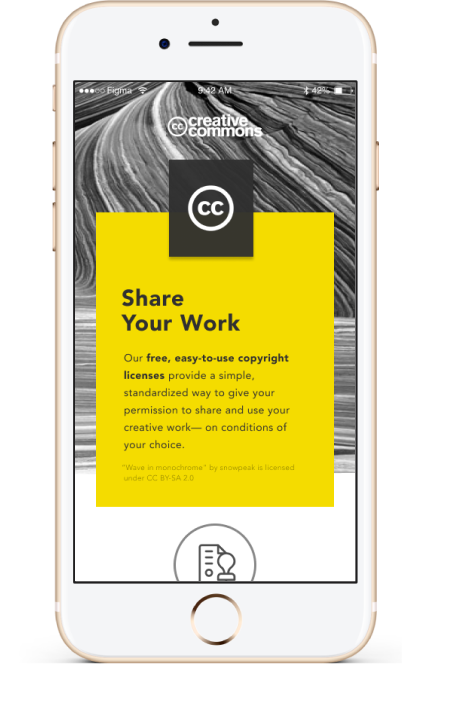
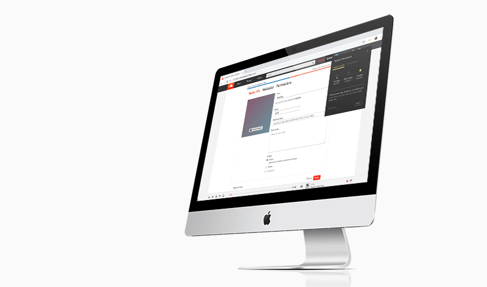

<html>
	<head>
		<title>Rebecca Yeap</title>
		<link rel="icon" href="assets/img/tagicon.png">
		<link rel="stylesheet" type="text/css" href="assets/css/bootstrap.min.css">
		<link rel="stylesheet" type="text/css" href="assets/css/ccarchive.css">
		<meta name="viewport" content="width=device-width, initial-scale=1.0">
	</head>
</html>
<body>
	<div id="navbar">
		<div class="menu-area">
            <ul class="inner-page-menu">
                <li><a href="index.html">work</a></li>
                <li><a href="about.html">about</a></li>
                <li><a href="nonwork.html">photo</a></li>
            </ul>
		</div>
	</div>
	<div class= "container-fluid" id="about_block"> 
		<div class="row">
			<div class="col-md-6 offset-md-2">
				<div style="padding-top: 100px; margin-left: 50px">
					<h2>Creative Commons</h2>
					<p>UX DESIGN・4-WEEK TIMELINE・NOVEMBER 2018</p>
				</div>
				<div class="row">
					<div class="col-md-6" style="padding-top: 20px;margin-left: 50px">
					<p>The <a href="https://creativecommons.org/">Creative Commons (CC)</a> is a nonprofit organization that has developed copyright licenses for content creators and made a body of work available to the public for free, legal use. </p>

					<p>In January 2018, Creative Commons kicked off an new initiative called <a href="https://medium.com/@janepk/findings-from-the-discovery-phase-of-cc-usability-3bde89d55a74">CC Usability</a> and found many important findings, one being a creator’s need and desire to archive work. I had the unique opportunity to develop and deliver an archive prototype about the future that CC might help build. 
					 </p> 

					 <p>The prototypes I designed have been staged for development this summer for Google Summer of Code fellows, and can be viewed along with other prototypes developed as part of the CC Usability Initiative at this <a href="http://creativecommons.github.io/gsoc-2019/project-ideas/difficulty-medium/#cc-archive">GitHub repository</a> and interactive <a href="https://invis.io/5DQS1AD2BQC">InVision prototype</a>. 
					 </p> 
					</div>
				</div>
				
			</div>
		</div>

		<div class="row">
			<div class="col-md-10 offset-md-1"> 
				
				
			</div>
			
		</div>
	</div>
		
</body>
</html>